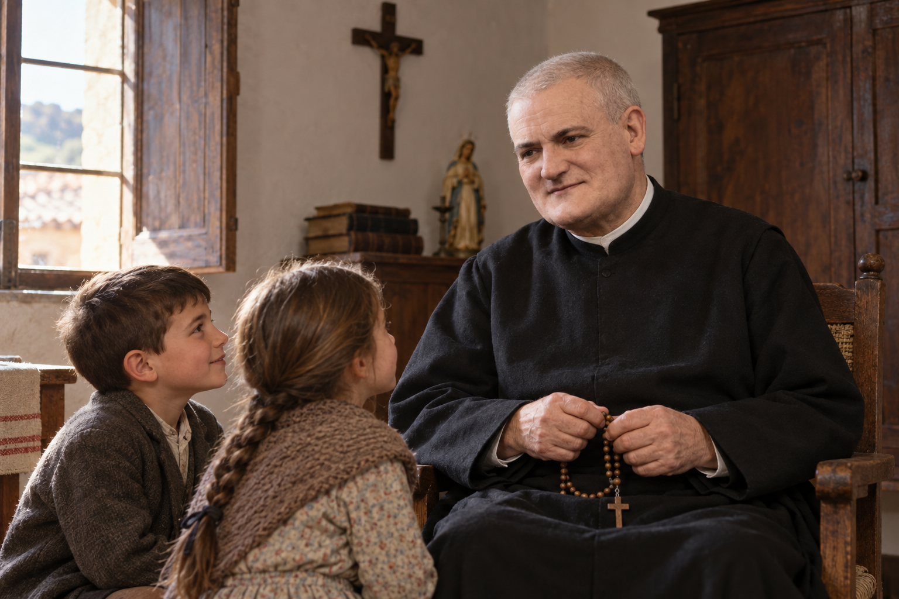

Sus primeros años
Antes de ser religioso se llamaba Francisco Felipe Naya. Nació el 10 de octubre de 1856 en Alquézar y venía de una familia humilde.
En 1876 comenzó el noviciado en Peralta de la Sal. Hizo sus primeros votos en 1880 y la profesión solemne en 1883.
Su trabajo
Durante muchos años fue cocinero en diferentes casas escolapias.También se encargó del refectorio cuando comenzó a tener problemas de vista.
Prestó servicio en lugares como Zaragoza, Caspe, Alcañiz, Tafalla, Pamplona y Tamarite de Litera.
Su forma de ser y su fe
Las fuentes lo describen como una persona sencilla, humilde y amable.
Rezaba seguido el rosario y era querido por los niños de Peralta.

Recreación realizada con inteligencia artificial.Es una imagen orientativa y no una fotografía real.
Martirio y beatificación
En 1936 fue detenido junto con otros escolapios. Murió el 9 de agosto cerca de Azanuy, con el rosario en las manos.
Fue beatificado por el papa Juan Pablo II el 1 de octubre de 1995, junto con Dionisio Pamplona y otros once escolapios.
Su legado
Para nosotros, su historia demuestra que una persona puede dejar un buen ejemplo ayudando a los demás desde tareas simples y cotidianas.
Recreación simbólica realizada con inteligencia artificial.